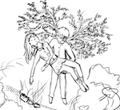
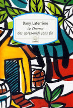
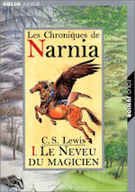
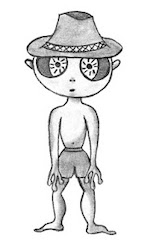
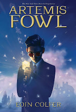
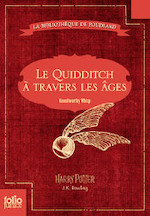
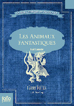
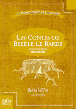
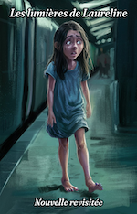

2016
Avril
- 17 — Réflexions sur Samare 3/5 - Les personnages secondaires
- 17 — Interrogations en vrac sur Samare
- 11 —  Réflexions sur Samare 2/5 - Les personnages principaux
- 10 — Réflexions sur Samare 1/5
- 09 — Flocons d’amour de Maureen Johnson, John Green et Lauren Myracle
- 02 — Vous revoir de Marc Levy
Mars
- 25 — Et si c’était vrai… de Marc Levy
-
20 —
Mes dernières lectures

 Charlie et la chocolaterie (Roald Dahl), Le charme des après-midi sans fin (Dany Laferrière), Narnia - Le neveu du magicien (C.S. Lewis), Chroniques des années noires (Kim Stanley Robinson), ♡ Le ver à soie (Robert Galbraith), ♡ Le visiteur du futur - La Meute (Slimane-Baptiste Berhoun et François Descraques)
Charlie et la chocolaterie (Roald Dahl), Le charme des après-midi sans fin (Dany Laferrière), Narnia - Le neveu du magicien (C.S. Lewis), Chroniques des années noires (Kim Stanley Robinson), ♡ Le ver à soie (Robert Galbraith), ♡ Le visiteur du futur - La Meute (Slimane-Baptiste Berhoun et François Descraques) - 13 —  La réécriture de mon roman ou comment passer son temps à réinventer sa propre histoire ?
2015
Décembre
Novembre
Octobre
- 21 —  Artemis Fowl d’Eoin Colfer
- 20 — Le narrateur c’est tabou…
- 13 — Un endroit où écrire
- 12 — Show, don’t tell !
- 11 — 💖 Abyss d’Orson Scott Card
Septembre
- 22 — Mes projets en cours
Août
-
29 —
« Hors-séries » de la saga Harry Potter de J.K. Rowling
Le quidditch à travers les âges, Les animaux fantastiques et où les trouver, Les contes de Beedle le barde
- 29 — Les espaces et les caractères typographiques
-
28 —
 Les 100 de Kass Morgan
Les 100 de Kass Morgan
- 26 —  Les lumières de Laureline, nouvelle revisitée
- 23 — Les lumières de Laureline, nouvelle
-
14 —
 Les visages de Dieu de Mallock
Les visages de Dieu de Mallock
-
14 —
Dernières lectures


 Nuit noire (Lynn Beach), Grey (E.L. James), Les menteuses (Sara Shepard)
Nuit noire (Lynn Beach), Grey (E.L. James), Les menteuses (Sara Shepard) -
01 —
 💖 Orgueil et préjugés de Jane Austen
💖 Orgueil et préjugés de Jane Austen
Juillet
-
29 —
 Geisha d’Arthur Golden
Geisha d’Arthur Golden
-
13 —
 💖 L’appel du coucou de Robert Galbraith
💖 L’appel du coucou de Robert Galbraith
-
07 —
 💖 De bons présages de Terry Pratchett et Neil gaiman
💖 De bons présages de Terry Pratchett et Neil gaiman